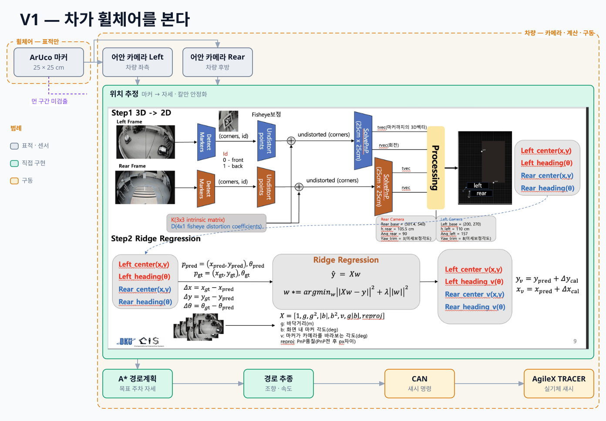
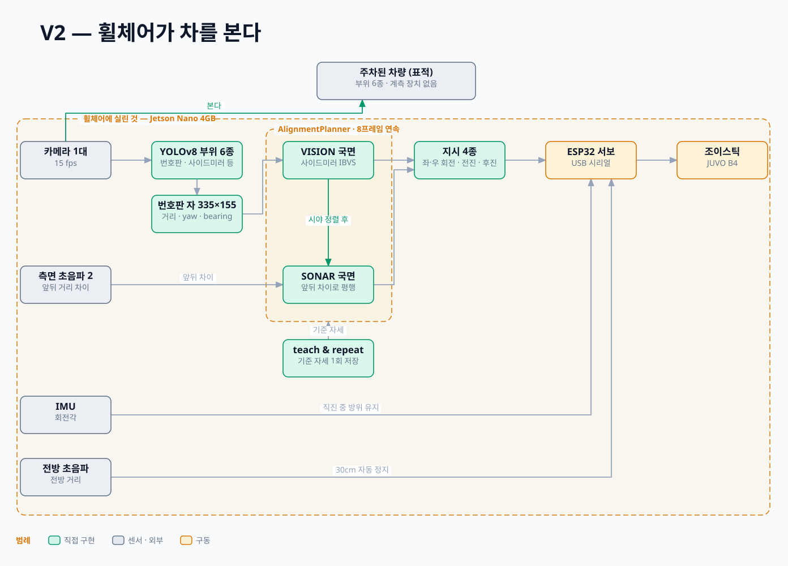
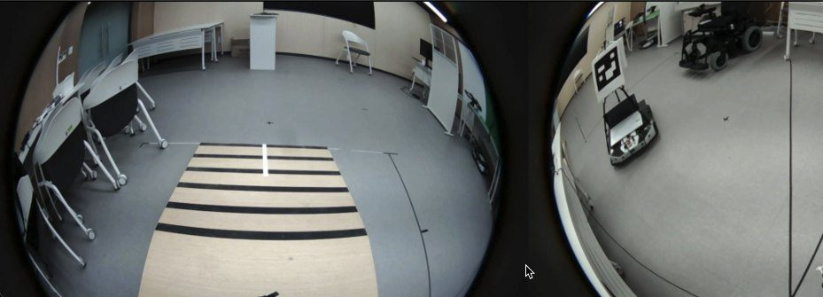
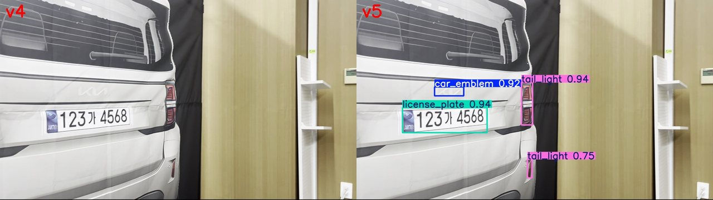
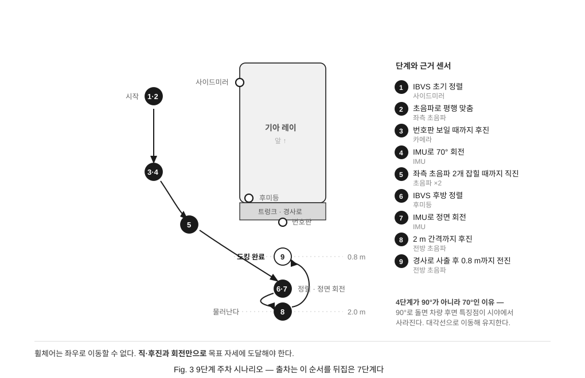
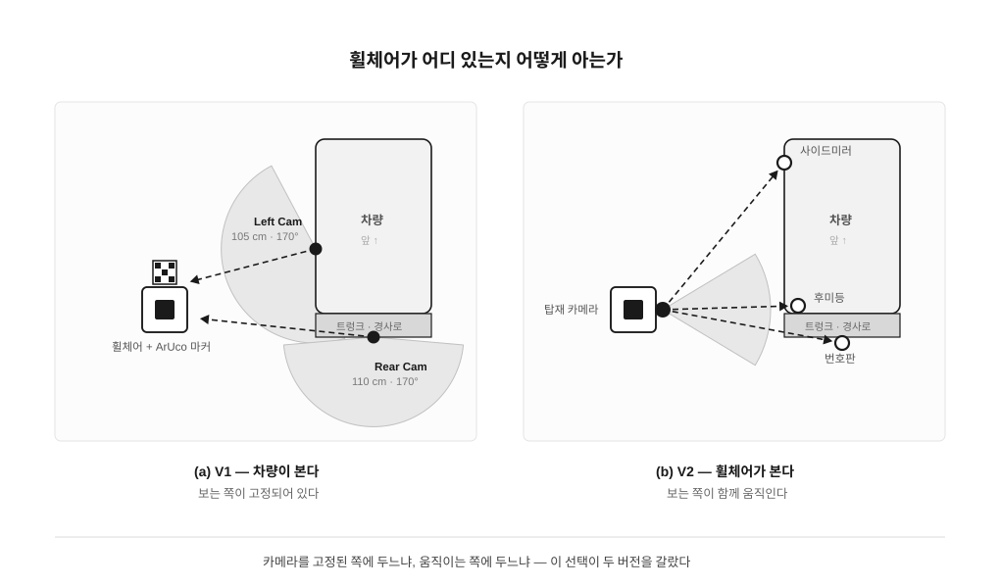

전동휠체어 자동 주차 시스템
운전하는 사용자를 위한 전동휠체어 적재
Impact
- 카메라를 옮긴 재설계먼 구간이 안 찍혀 전면 개편차량 어라운드뷰 → 휠체어 탑재
- 직접 구성한 데이터실차 121장·목업 60장 직접 라벨링차량 부품 6종 · 번호판을 자로
- IMU로 회전 보정앞바퀴가 캐스터라 틀어짐을 못 읽음각도 대신 회전속도를 맞춰 진동 제거
- 하드웨어 최적화디코딩이 코어 하나를 91% 점유갱신 주기 분리로 4 → 15 FPS
Background
전동휠체어 사용자는 차량에 탑승한 뒤,
밖에 남겨진 휠체어를 스스로 실을 수 없습니다. 이 과정에는 반드시 타인의 도움이 필요합니다.
본 연구에서는 기아 RAY 자가운전 차량을 기준으로,
휠체어가 스스로 트렁크까지 가서 주차 및 출차하는 시스템을 제안합니다.
Architecture


Contributions
V1 — 차량 카메라로 위치 추정
차량에 장착되어 있는 어라운드뷰 카메라로 휠체어의 ArUco 마커를 보고 위치를 추정합니다.
- 어안 왜곡을 편 뒤 SolvePnP로 마커까지의 위치와 회전을 구함
- 오차가 거리와 각도에 따라 일정한 방향으로 치우쳐, 그 편향을 학습으로 상쇄하는 보정층을 설계
- 칼만 필터로 시계열을 안정화

V2 — 휠체어 카메라로 위치 추정
휠체어에 실은 카메라로 차량의 특징을 봅니다.
공개 데이터셋이 실차에서 듣지 않아 직접 촬영하고 라벨링해 학습시켰습니다.
- 번호판, 엠블럼, 손잡이, 주유구, 후미등, 사이드미러 부위 6종을 개별 탐지
- 번호판을 기준 자로 삼아 거리를 추정
- 목업을 학습시킨 뒤 검출이 6배 증가

두 가지 센서로 정렬
사이드미러로 시야를 맞춘 뒤, 초음파로 평행을 맞춥니다.
한 센서로 끝까지 가지 않고 구간마다 기준을 넘깁니다.
- VISION — 사이드미러의 화면 위치와 크기를 목표 자세에 맞춤
- SONAR — 측면 초음파 앞뒤 거리 차이로 차량과 평행하게
- 두 국면 모두 여덟 프레임 연속 허용범위여야 다음으로 넘어감

하드웨어 최적화
휠체어에 장착할 컴퓨터라는 제약에서 출발해 Jetson Nano 4GB에 얹었습니다.
4 FPS에 머물던 것을 지속 15 FPS, 프레임당 추론 42 ms로 끌어올렸습니다.
- 카메라를 30 fps로 받으면 디코딩 스레드가 코어 하나를 91% 점유해 추론이 쓸 CPU를 뺏음
- 카메라를 15 fps로 낮추고 화면 갱신을 10 Hz로 분리
- 모델 로드 중 프리징은 스왑 부족이어서 4 GB로 확장
Troubleshooting
튜닝으로 풀 문제와 설계를 바꿔야 하는 문제
- 문제
- 먼 구간의 오차가 줄지 않음. 보정을 더해도 그대로
- 원인
- 거리가 멀어 그 구간이 아예 찍히지 않음. 파라미터로 풀 문제가 아니었음
- 해결
- 마커를 키울 수도, 보정으로 메울 수도 없음. 그 근거로, 카메라를 휠체어로 옮기자고 제안
- 결과
- V1에서 V2로 설계를 바꿈. 경로 생성은 그대로 쓸 수 있음. 팀원 작업은 영향 없음

직진 중 좌우로 진동
- 문제
- 직진 명령을 줘도 똑바로 못 감. 좌우로 흔들림
- 원인
- 앞바퀴가 캐스터라 이전 방향으로 휨. 그 틀어짐을 읽을 센서가 없음. IMU로 각도를 재 P제어로 되돌림. 방위오차가 1.2°인데 자이로는 −17.7°/s. 도착 순간 브레이크가 없어 반대로 넘어감
- 해결
- 각도로 목표 회전속도를 정함. 자이로가 그 속도를 맞추는 구조로 교체. 적분항이 캐스터의 틀어짐을 주행 중 학습
- 결과
- 가까울수록 스스로 감속. 50° 복귀가 11초에서 7초로 절감
Jetson Nano에서 프리징
- 문제
- 추론을 돌리면 보드가 멈춤. 아무 응답이 없음
- 원인
- 메모리가 모자라 스왑이 부족해짐
- 해결
- 스왑을 4GB로 늘림. 입력 해상도를 320픽셀로 낮춤
- 결과
- 15FPS로 지속 구동. 추론에 42ms